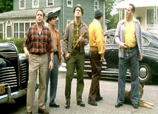

| Two Family House/ B, B+ |
| Universal/2000/109/ANA
1.85 |
Two Family House
is a sleeper of a little film. It's is set in blue collar Staten Island,
the least of New York City's five boroughs, in the early fifties. It's a
very sweet romance that evolves with unexpected sensitivity.
Buddy Visalo a man with a stack of failures piling
as high a mountain blocking his quest for success. His latest idea is
converting a run down two family house into Buddy's Tavern. He and
Estelle, his wife of eleven years, will use the upstairs apartment as
home. Sure enough, with Buddy's luck, it's not so easy getting rid of
the tenants. The house complications are entertaining, and Buddy remains
an endearing character from start to finish.
 |
| Eviction
proceedings. ©Universal |
The big surprise is the
romance that evolves from the situation. Its completely unexpected. And
while you might want to condemn Buddy, he's simply too nice a guy. He
simply does not want to hurt anybody.
Michael Rispoli, a character actor much like a
young Nathan Lane might have been, is very good in the core role of
Buddy Visalo. He captures Buddy's sweetness and yes, a touch on
innocence. Kelly MacDonald plays Mary O'Neary, the tenant that touches
Buddy's heart. She outstanding. You can catch her in a major role in Gosford
Park.
Written and directed by Raymond De Felitta,
Two Family House is an articulate urban tale sprinkled with fairy
dust. Nicely paced and unusually honest, it's well worth catching.
Two Family House is a very
nice looking DVD. Color saturation is excellent with a nice range of
skin tones. Blacks are rich and deep and night scenes have good sparkle.
Good contrast range makes for a bright and lively transfer. Night scenes
glisten.
|
|
|
|

Selections from the Feature Archive
include articles on Akira Kurosawa, Frank Darabont, Blonde Bimbos, Hollywood Street Gangs, or Vietnam: The Hollywood Pariah, and many
more....
Sturges Emerges
Preston Sturges was Hollywood's resident comic genius for more than
a decade. His movies are timeless. Click on his image to read all about
it.
 
ISF Monitor
Calibrations in the Tristate New York area. Lots of hardware info
and frequent hardware peaks from video expert Kevin Miller. They may be
judgmental, but that's the point, isn't it. Lots of DVD reviews plus
news and more.

The official site for information about the great comic director. A
treat for connoisseurs of classic Hollywood madcap.

DVDAnswers offers news, reviews and features. Over the
coming months, the site will continue continues to grow as they strive
to make DVDAnswwers the ultimate DVD website!

Images is a non-commercial Web site created for everyone who enjoys
movies and popular culture. Images is published quarterly; however, new
reviews will appear each week, so check back often.

The major studio vaults are filled with
incredible film treasures which few have seen the light of DVD.
Open the Vaults

The Movie Poster Archive includes extensive poster
images from the films of stars like Susan Hayward, Kirk Douglas,
Katharine Hepburn and many more. Our featured star is Danny Kaye.
|